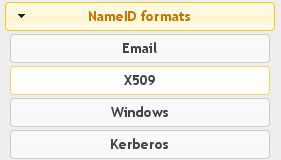
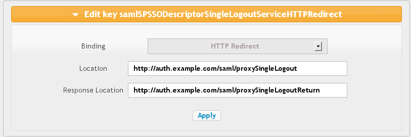
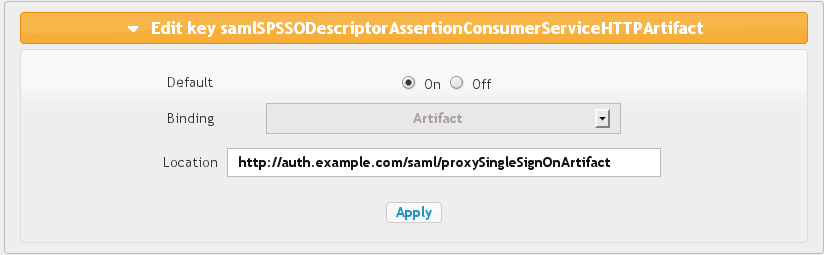

SAML service configuration
Presentation
This documentation explains how configure SAML service in LemonLDAP::NG, in particular:- Install prerequisites
- Import or generation security keys
- Set SAML end points
Prerequisites
Lasso
SAML2 implementation is based on Lasso. You will need a very recent version of Lasso (>= 2.3.0).Debian/Ubuntu
There are packages available here: http://deb.entrouvert.org/. You will only need to install liblasso3-perl package:$ sudo apt-get install liblasso3-perl
RHEL/CentOS/Fedora
Packages should be available soon.
Other
Download the Lasso tarball and compile it on your system
Apache rewrite rules
Be sure that mod_rewrite is installed and that SAML2 rewrite rules are activated in etc/portal-apache2.conf:
<IfModule mod_rewrite.c>
RewriteEngine On
RewriteRule ^/saml/metadata /metadata.pl
RewriteRule ^/saml/.* /index.pl
</IfModule>
Service configuration
All configuration can be done with LemonLDAP::NG Manager. Connect to it first (by default http://manager.example.com). The service configuration is done into the node SAML 2 Service.Entry Identifier
Your EntityID, often use as metadata URL, by default http://auth.example.com/saml/metadata. Change this value to fit your portal URL, for example:
Security parameters
This section concerns public and private keys, mandatory to exchange SAML messages with other providers. You have two options:
- use your own keys generated from your PKI
- generate keys from configuration interface
You can set keys for signing and encryption. Keys for signing are mandatory, but if no keys are defined for encryption, keys for signing will be used.
Private keys can be protected by a password: in this case, set the password in the private key password field.
Public key can be a raw public key or a certificate containing the public key.
If you want to generate key from the interface, click on Private key, and the on Generate:

A password will be prompted. Leave blank if you don't want to protect the private key with a password.
The private and public are then generated in Public key and Private key fields.
NameID formats

SAML can use differents NameID formats. The NameID is the main user identifier, carried in SAML messages. You can configure here which field of LemonLDAP::NG session will be associated to a NameID format.
Customizable NameID formats are:
- X509
- Windows
- Kerberos
Other NameID formats are automatically managed:
- Transient: NameID is generated
- Persistent: NameID is restored from previous sessions
- Undefined: Default NameID format is used (see issuer SAML configuration)
Organization
This concerns all parameters for the Organization metadata section: <Organization></Organization>.
- Display Name: should be displayed on IDP, this is often your society name
- Name: internal name
- URL: URL of your society
Service Provider
This concerns all parameters for the Service Provider metadata section: <SPSSODescriptor></SPSSODescriptor>.
General options
- Signed Authentication Request: set to On to always sign authentication request.
- Want Assertions Signed: set to On to require that received assertions are signed.
Single Logout
For each binding you can set:
- Location: Access Point for SLO request. Change this value to fit your portal URL.
- Response Location: Access Point for SLO response. Change this value to fit your portal URL.

Available bindings are:
- HTTP Redirect
- HTTP POST
- HTTP SOAP
Assertion Consumer
For each binding you can set:
- Default: will this binding be used by default for authentication response
- Location: Access Point for SSO request and response. Change this value to fit your portal URL.

Available bindings are:
- HTTP Artifact
- HTTP Redirect
- HTTP POST
Artifact Resolution
The only authorized binding is SOAP. This should be set as Default. Location has to be adapted to fit your portal URL.
Identity Provider
This concerns all parameters for the Service Provider metadata section: <IDPSSODescriptor></IDPSSODescriptor>.
General parameters
- Want Authentication Request Signed: set to On to require that received authentication request are signed.
Single Sign On
For each binding you can set:
- Location: Access Point for SSO request. Change this value to fit your portal URL.
- Response Location: Access Point for SSO response. Change this value to fit your portal URL.
- HTTP Redirect
- HTTP POST
- HTTP Artifact
- HTTP SOAP
Single Logout
For each binding you can set:
- Location: Access Point for SLO request. Change this value to fit your portal URL.
- Response Location: Access Point for SLO response. Change this value to fit your portal URL.
- HTTP Redirect
- HTTP POST
- HTTP SOAP
Artifact Resolution
The only authorized binding is SOAP. This should be set as Default. Location has to be adapted to fit your portal URL.
Attribute Authority
This concerns all parameters for the Attribute Authority metadata section: <AttributeAuthorityDescriptor></AttributeAuthorityDescriptor>.
Attribute Service
This is the only service to configure, and it accept only the SOAP binding.
Location has to be adapted to fit your portal URL. Response Location should be empty, as SOAP responses are directly returned (synchronous binding).
Advanced
These parameters are not mandatory to run SAML service, but can help to customize it:
- IDP resolution cookie name: by default, it's the LemonLDAP::NG cookie name suffixed by 'idp', for example: 'lemonldapidp'.
- UTF8 metadata conversion: set to On to convert partner's metadata, in cas of the carry special characters.
- SAML sessions module name and options: by default, the main session module is used to store SAML temporary data (like relaystates), but SAML sessions need to use a module compatible with the searchOn functions. This is not the case of Memcached for example. In this case, you can choose a different module to manage SAML sessions.